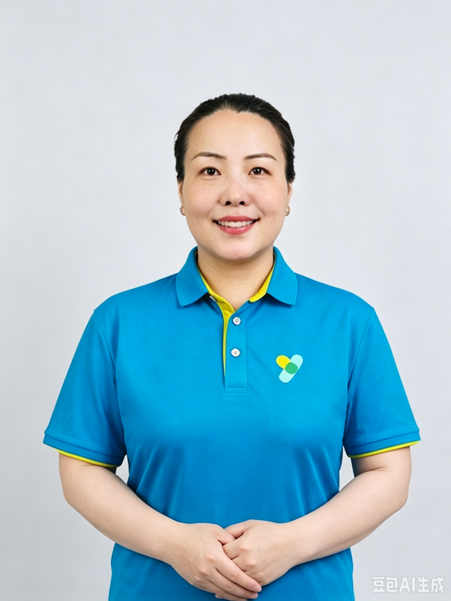
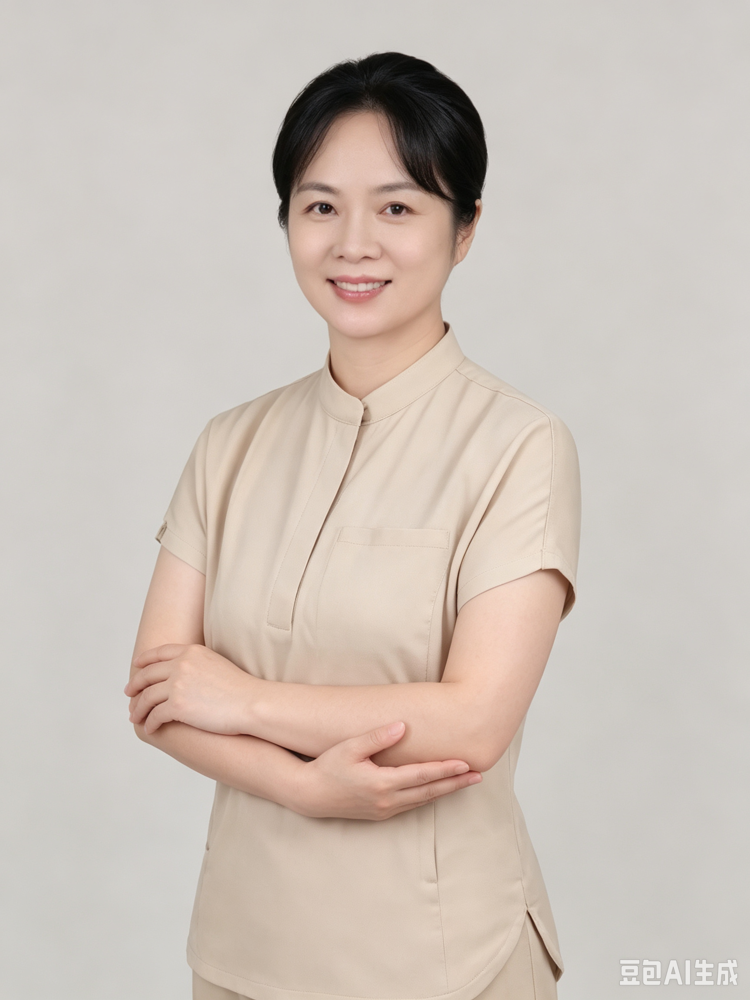
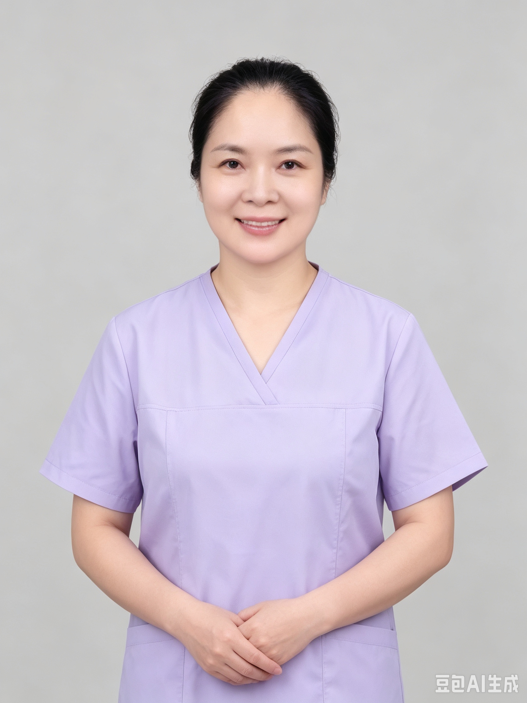
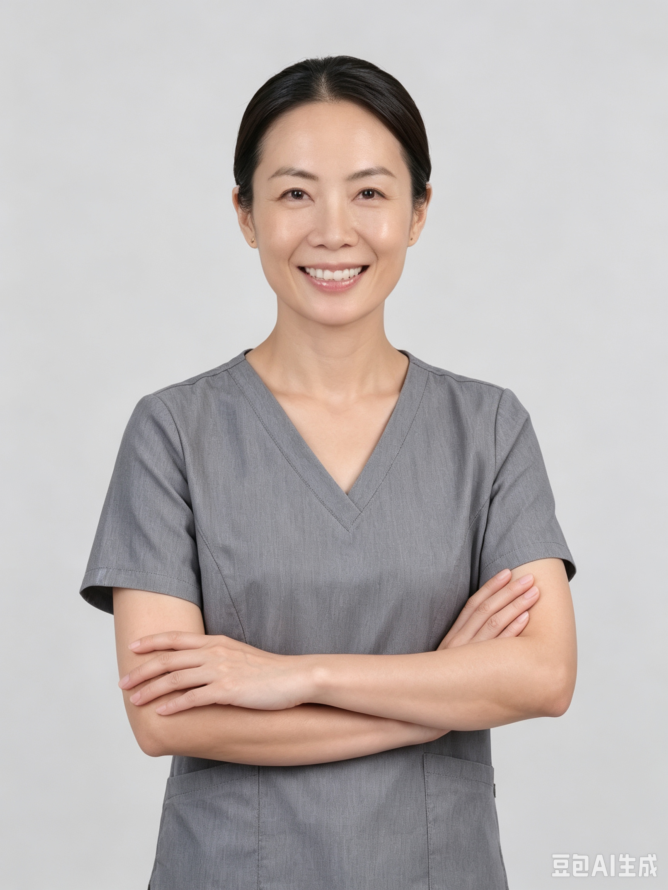
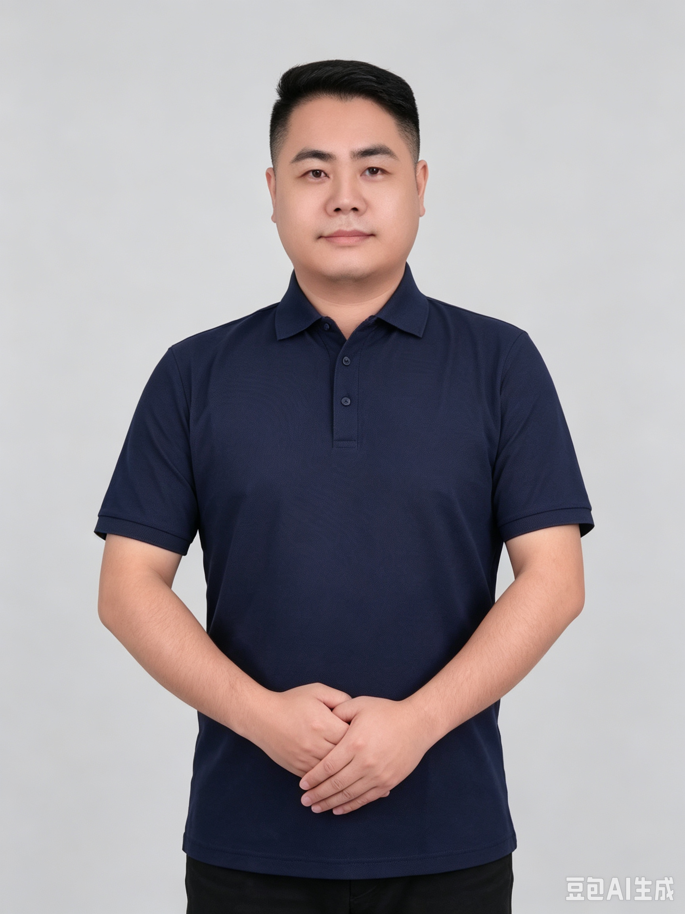
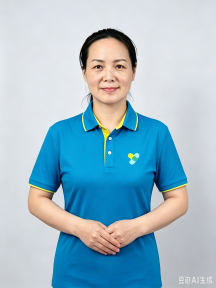
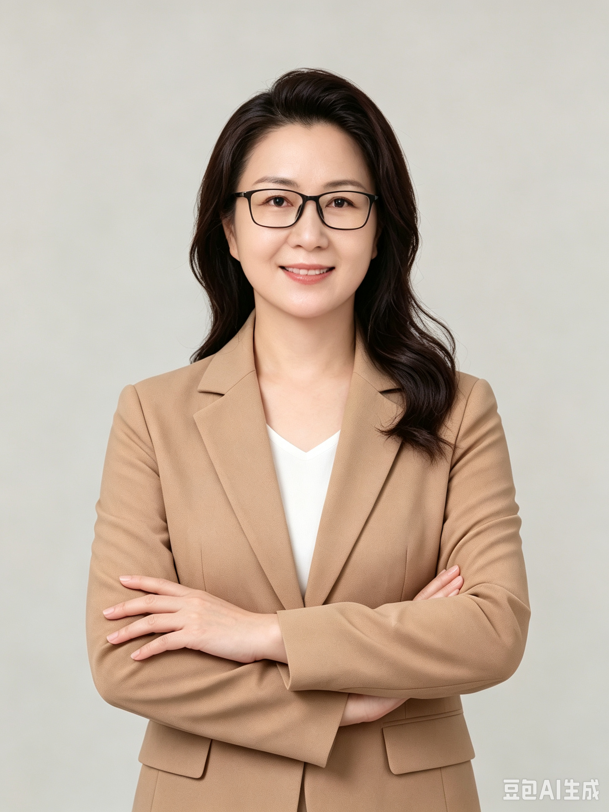

专业护理人才
专业有标准，让照护回归信任与尊重
专业人才
专业照护，从专业的人开始
易得康围绕生活照护、长期护理、居家医疗、康复、营养、母婴与人才培养等场景，汇聚不同职业背景的专业人才，以清晰分工、团队协作、持续培训与质量管理，为家庭及合作机构提供稳定、连续的照护支持。
专业护理员
经过系统培训与岗位考核，围绕高龄、失能、半失能及需要日常支持的人群，提供生活照料、安全看护、行动协助与日常陪伴，并按照服务计划记录和反馈服务情况。

执业护士
将规范的临床护理延伸至家庭，保障院后和长期照护的连续性与安全性。
具备法定执业资格和临床护理能力，根据患者健康状况、医嘱与护理评估，提供健康监测、伤口及导管护理、用药指导和健康宣教等专业服务，并参与居家护理计划的执行与反馈。

母婴护理师
用科学、细致的专业陪伴，帮助家庭平稳走过产后与新生儿照护关键期。
围绕孕产妇恢复与新生儿早期照护，提供产妇生活照料、新生儿日常护理、喂养支持、健康观察与家庭育儿指导，并根据母婴阶段和家庭需求调整服务重点。

注册营养师
把营养管理融入照护过程，为康复、慢病管理与全生命周期健康提供支持。
依据健康状况、疾病特点、饮食习惯与营养评估，为老年人、慢病患者、康复期人群及母婴家庭提供膳食建议、营养干预与持续随访，并与照护团队协同调整营养方案。

康复治疗师
让康复从医院延伸到家庭，帮助患者在真实生活中恢复能力与信心。
基于专业评估，为术后、卒中、骨折、慢病及功能障碍人群制定个体化康复计划，通过运动治疗、功能训练、转移指导与家庭训练建议，帮助改善身体功能和日常活动能力。

长期照护师
连接制度保障与家庭需要，提升失能照护的专业化和职业化水平。
面向失能人员及有长期照护需求的人群，提供基本生活照料以及与之密切相关的护理协助、功能维护、风险识别和心理支持。

照护培训导师
把一线经验沉淀为可学、可练、可考核的标准，推动照护人才持续成长。
具备照护实践与教学经验，负责课程研发、理论讲授、实操训练、岗前培训与在岗带教，围绕生活照料、安全护理、康复训练、母婴护理及服务规范等内容培养专业人才。
